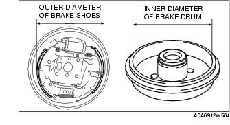
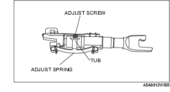

Brake shoe clearance adjustment
1. Measure the inner diameter of the brake drum and the outer diameter of the brake shoe.

2. Adjust the clearance by rotating the adjust screw with a flathead screwdriver, expanding or contracting the brake shoe until the outer diameter of the brake shoe is 0.5 mm {0.02 in} less than the inner diameter of the brake drum.

- • The adjuster spring may be deformed if the adjust screw is rotated without lifting up the adjuster spring tab. Do not excessively force the adjust screw when rotating and be careful not to deform the tab.